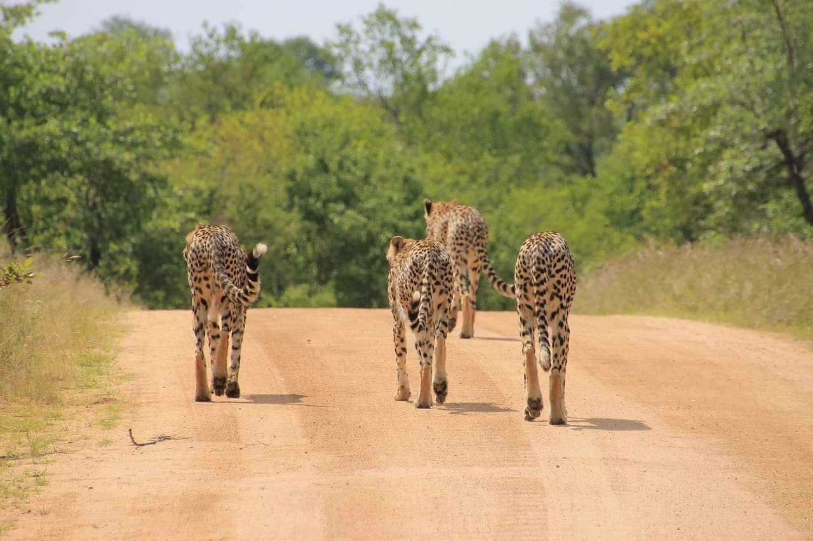
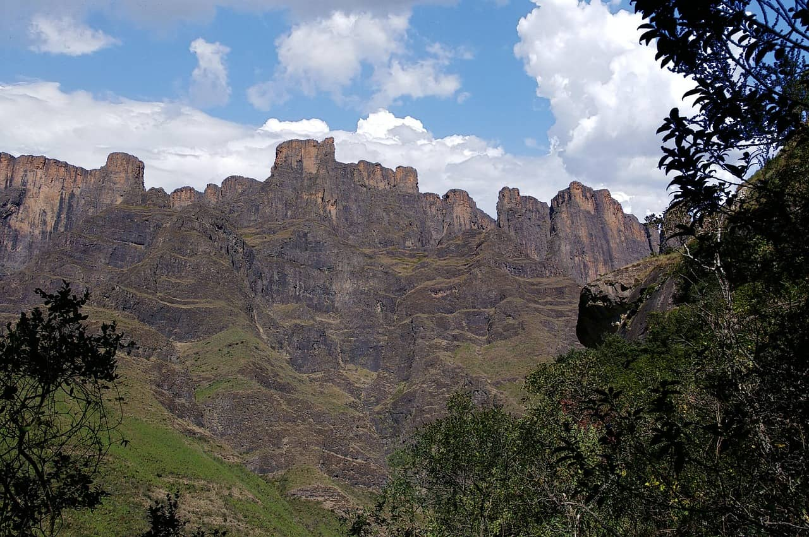
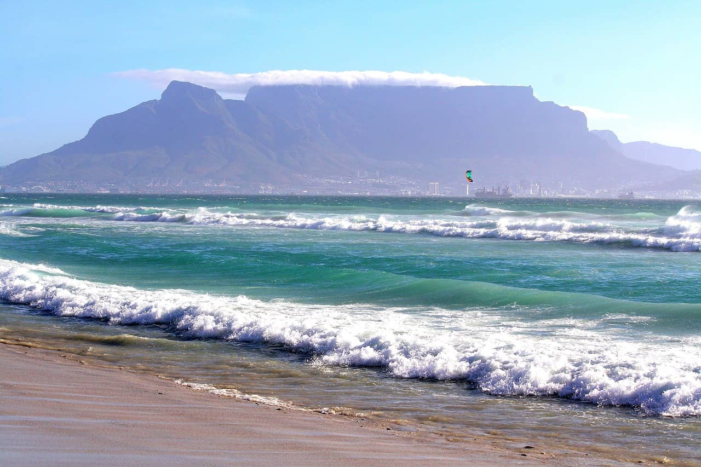
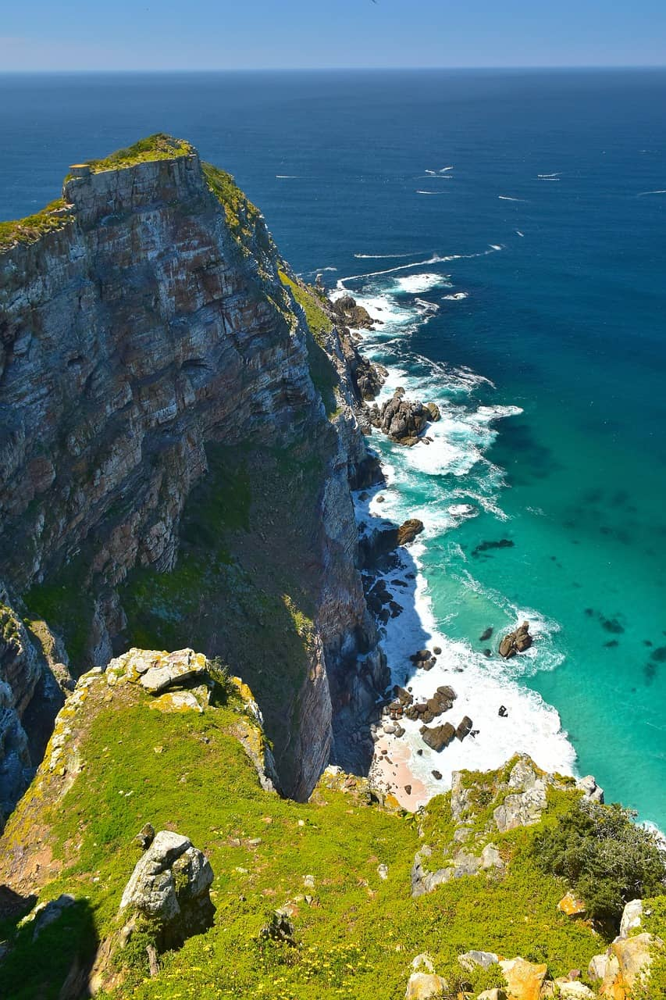
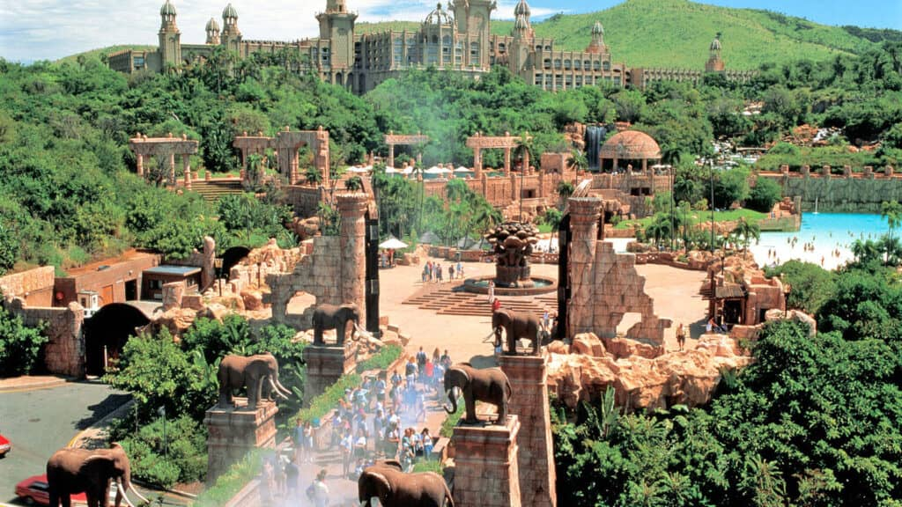
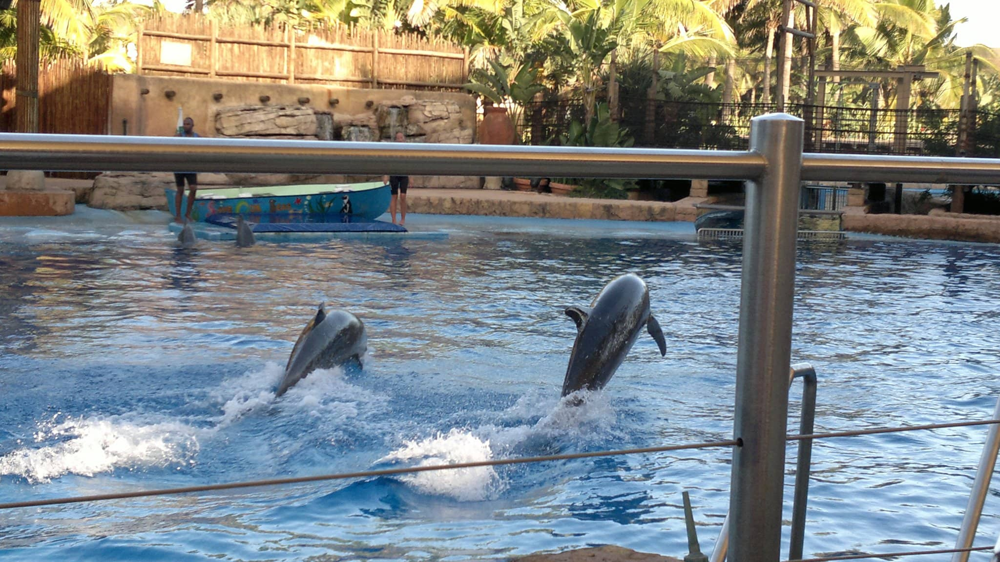
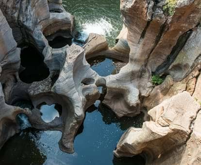

Soth Africa's top destinations
Flip the card to find out more
Kruger National Park
Experience the wild heart of Africa at Kruger National Park, one of the continent's largest game reserves. Home to the Big Five (lion, leopard, elephant, rhino, and buffalo), Kruger offers unparalleled wildlife viewing opportunities. Explore vast landscapes from savannahs to riverine forests on guided safaris and enjoy luxurious lodges or rustic campsites under the African stars.
Drakensberg Mountains
Discover the majestic Drakensberg Mountains, a UNESCO World Heritage site renowned for its dramatic peaks and verdant valleys. Ideal for hiking, rock climbing, and bird watching, the Drakensberg offers a tranquil escape with breathtaking scenery. Visit ancient San rock art sites and immerse yourself in the rich cultural and natural heritage of this awe-inspiring region.
Table Mountain
Ascend the iconic Table Mountain, one of the New Seven Wonders of Nature, overlooking the vibrant city of Cape Town. Take the cableway or hike to the summit for panoramic views of the city, coastline, and Robben Island. The flat-topped mountain is a haven for biodiversity, with unique flora and fauna, and a must-visit for outdoor enthusiasts and nature lovers.
Cape Agulhas
Stand at the southernmost tip of Africa at Cape Agulhas, where the mighty Atlantic and Indian Oceans converge. Known for its rugged coastline and windswept beauty, Cape Agulhas offers a unique and breathtaking experience for visitors. Explore the historic Cape Agulhas Lighthouse, the second-oldest working lighthouse in South Africa, providing panoramic views of the meeting point of two oceans.
Sun City Resort
Indulge in luxury and entertainment at Sun City Resort, a premier holiday destination nestled in the North West Province. Known for its world-class casinos, championship golf courses, and the Valley of Waves water park, Sun City offers endless activities for families and thrill-seekers. Experience the magic of this resort with its opulent accommodations and vibrant nightlife.
uShaka Marine World
Dive into adventure at uShaka Marine World in Durban, a premier marine theme park with an array of attractions. Explore the wonders of the ocean at the Sea World aquarium, enjoy thrilling water slides at Wet 'n Wild, and experience close encounters with marine life. This family-friendly destination combines education and entertainment for an unforgettable day out.
Blyde River Canyon
Marvel at the breathtaking beauty of Blyde River Canyon, one of the largest canyons on earth and a highlight of the Panorama Route. Known for its lush subtropical foliage and dramatic rock formations, the canyon offers spectacular viewpoints like God’s Window and the Three Rondavels. Embark on scenic hikes, boat trips, and explore the rich biodiversity of this natural wonder.
Robben Island

Visit Robben Island, a UNESCO World Heritage site with a profound history. Located off the coast of Cape Town, the island is best known as the prison where Nelson Mandela was held for 18 years. Guided tours, often led by former inmates, provide deep insights into the struggle for freedom and justice in South Africa. The island's poignant history and stunning views make it a powerful and moving destination.